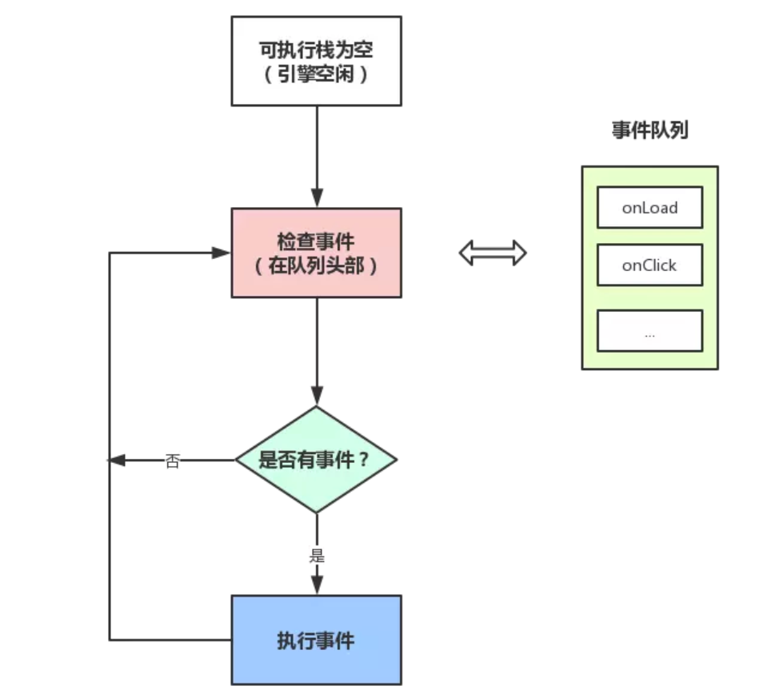
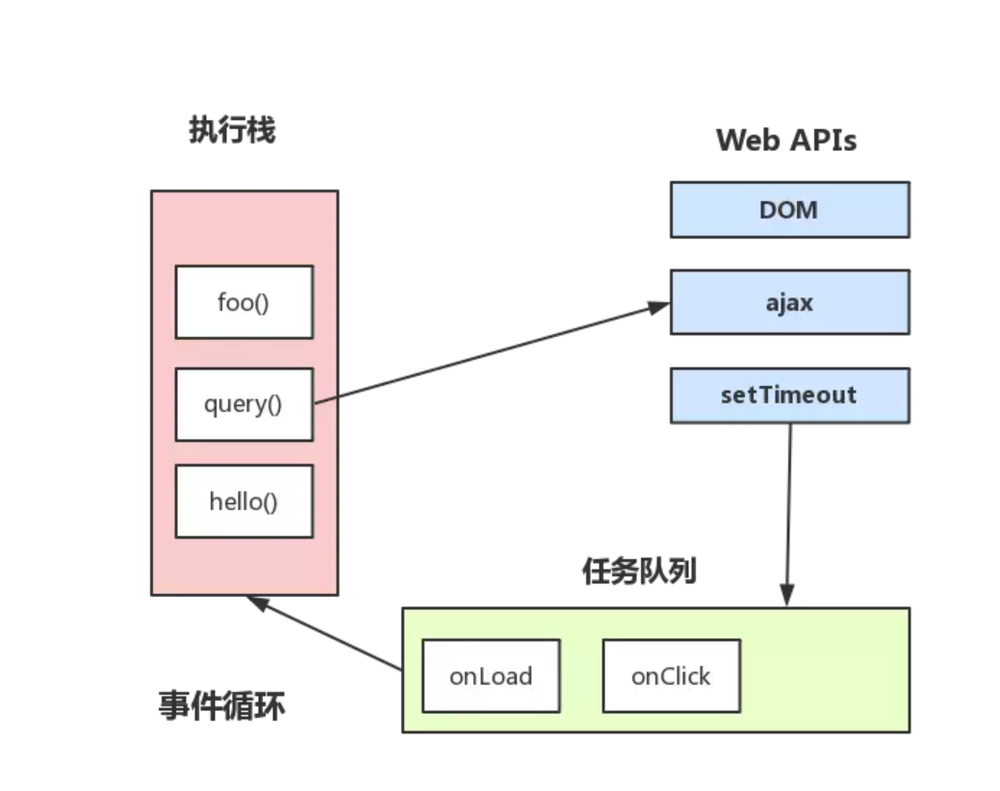
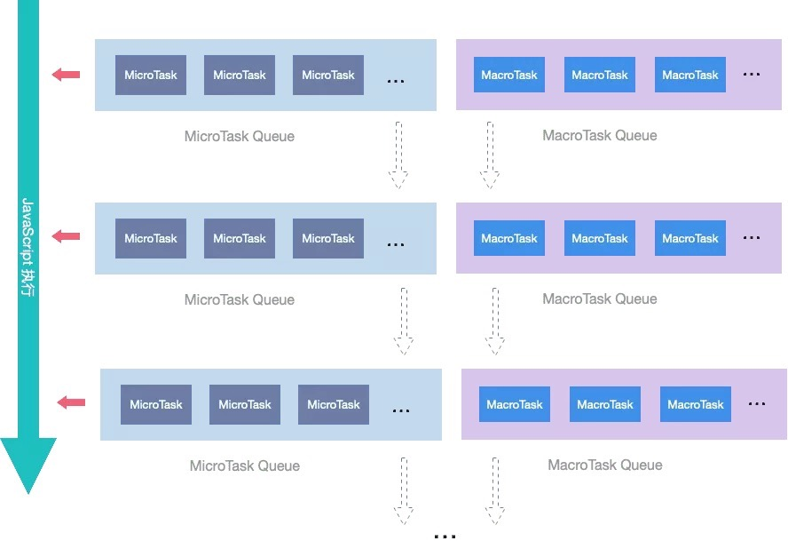
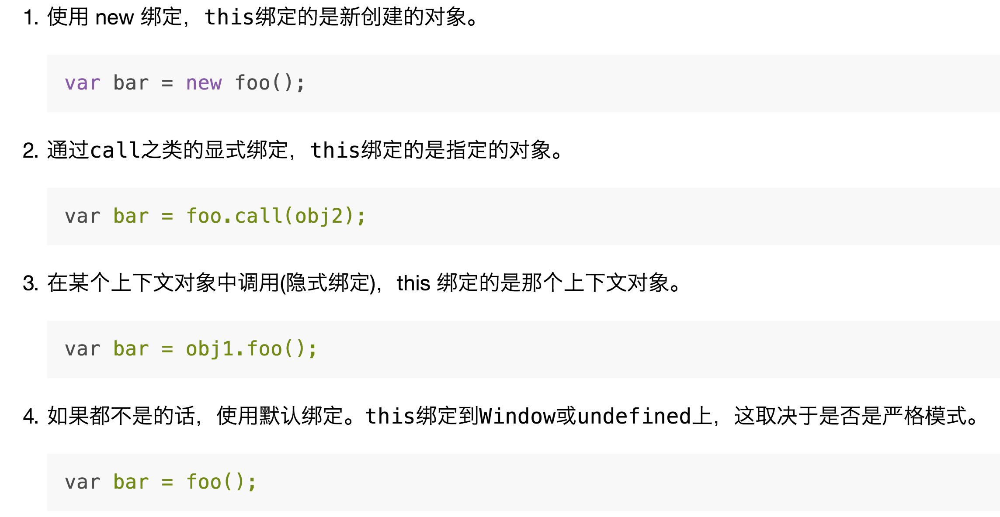
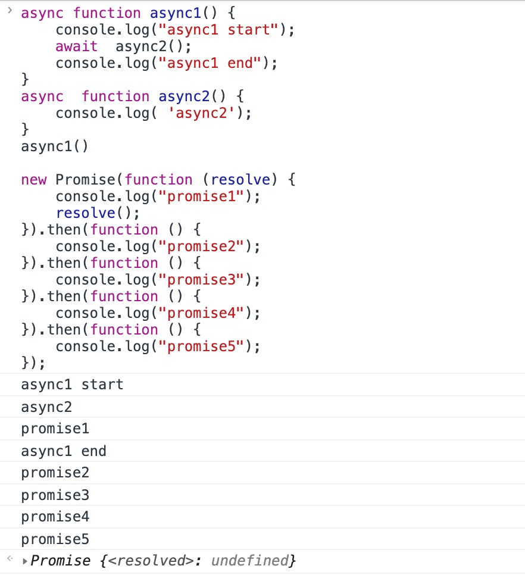

JS
2015年6月，ECMA 标准化组织正式批准了 ECMAScript 6 语言标准，定名为《ECMAScript 2015 标准》。JavaScript 语言正式进入了下一个阶段，成为一种企业级的、开发大规模应用的语言。这个标准从提出到批准，历时10年，而 JavaScript 语言从诞生至今也已经20年了。
js基本语法
- 语句
语句就是为了完成某种任务而进行的操作 if、for
- 表达式
为了得到结果的一个计算式
语句和表达式的区别
语句是为了进行某种操作，一般不需要返回值。表达式是为了得到返回值，一定有返回值。表达式没有分号。 可以在需要语句的地方写表达式，不能在需要表达式的地方写语句。
javascript中数据类型
- 基本类型（值类型）指的的是可以直接存储的类型（null、undefined、Boolean、string、number、symbol、object）
- 复杂类型（引用类型）
Object
Object(value)与new Object(value)两者的语义是不同的，Object(value)表示将value转成一个对象，new Object(value)则表示新生成一个对象，它的值是value。Object.prototype.toString可以看出一个值到底是什么类型。
var type = function (o){
var s = Object.prototype.toString.call(o);
return s.match(/\[object (.*?)\]/)[1].toLowerCase();
};
Number
取反运算符
==与===有什么区别？
相等运算符（==）比较两个值是否相等，严格相等运算符（===）比较它们是否为“同一个值”。如果两个值不是同一类型，严格相等运算符（===）直接返回false，而相等运算符（==）会将它们转换成同一个类型，再用严格相等运算符进行比较
“==”是比较强制类型转换之后的结果，“===”则是直接比较
“==”比较的时候会发生数据类型的转换当和一个Boolean值进行比较得时候javascript会将这个Boolean值转换为number类型再进行比较，赋值表达式不具有比较作用
“===”是严格相等运算符即判断等号两侧的数据类型是否一致（不一致直接返回false），又判断value是否相等，比较的时候不会发生数据类型的转换
一些特殊的比较示例
```
false == "" // true
false == [] // true
false == {} // false
"" == 0 // true
"" == [] // true
"" == {} // false
0 == [] // true
0 == {} // false
0 == null // false
```
null和undefined
二者在if语句中会自动转换为false
Boolean
除了undefined、null、false、0、NaN、""/'' 都会转换为true
空数组[]和空对象对应的Boolean值都是true
所有对象对应的布尔值都是true
```
Boolean(undefined) // false
Boolean(null) // false
Boolean(0) // false
Boolean('') // false
Boolean(NaN) // false
Boolean(1) // true
Boolean('false') // true
Boolean([]) // true
Boolean({}) // true
Boolean(function () {}) // true
Boolean(/foo/) // true
```
使用双重的否运算符（!）也可以将任意值转为对应的布尔值。
```
!!undefined // false
!!null // false
!!0 // false
!!'' // false
!!NaN // false
!!1 // true
!!'false' // true
!![][] // true
!!{} // true
!!function(){} // true
!!/foo/ // true
```
Array
forEach(item)让数组中每一项做一件事，适合不修改数据时用
map让数组通过计算产生一个新数组，需要改变数据时
indexOf方法返回给定元素在数组中第一次出现的位置，如果没有出现则返回-1。可以用来匹配存在的字段（匹配数字的时候加上‘1’，区别‘111’）
reduce接收一个函数返回一个值
RegExp
- 正则的匹配规则
- 字面量字符和元字符
某个字符只表示它字面的含义就是字面量字符
/good/.test('very good') //true
- 元字符
- 点字符（
.）匹配除回车（\r）、换行(\n) 、行分隔符（\u2028）和段分隔符（\u2029）以外的所有字符
^ 表示字符串的开始位置$ 表示字符串的结束位置
```
test必须出现在开始位置
/^test/.test('test123') // true
test必须出现在结束位置
/test$/.test('new test') // true
从开始位置到结束位置只有test
/^test$/.test('test') // true
/^test$/.test('test test') // false
+ `|`标识或
/11|22/.test('911') // true
``
+ 脱字符如果方括号内的第一个字符是[^]，则表示除了字符类之中的字符，其他字符都可以匹配。比如，[^xyz]表示除了x、y、z之外都可以匹配。
> 脱字符只有在字符类的第一个位置才有特殊含义，否则就是字面含义。
+ 连字符（-）,[abc]可以写成[a-c]，[0123456789]可以写成[0-9]，同理[A-Z]`表示26个大写字母。
- 预定义模式
\d 匹配0-9之间的任一数字，相当于[0-9]。\D 匹配所有0-9以外的字符，相当于[^0-9]。\w 匹配任意的字母、数字和下划线，相当于[A-Za-z0-9_]。\W 除所有字母、数字和下划线以外的字符，相当于[^A-Za-z0-9_]。\s 匹配空格（包括换行符、制表符、空格符等），相等于[ \t\r\n\v\f]。\S 匹配非空格的字符，相当于[^ \t\r\n\v\f]。\b 匹配词的边界。\B 匹配非词边界，即在词的内部。
- 重复类，使用大括号
{}表示
{n}表示恰好重复n次，{n,}表示至少重复n次，{n,m}表示重复不少于n次，不多于m次。
/lo{2}k/.test('look') // true
/lo{2,5}k/.test('looook') // true
- 量词符
? 问号表示某个模式出现0次或1次，等同于{0, 1}。* 星号表示某个模式出现0次或多次，等同于{0,}。+ 加号表示某个模式出现1次或多次，等同于{1,}。
JSON
+
函数
函数是一段可以重复调用的代码块
+ 函数如果没有返回值，默认返回undefined
+ 具名函数赋值
```
const {log}=console
const fn1=function fn2(){}
log(fn1)// fn2
log(fn2)//not defined 作用域只限于fn2内部，外部无法访问到
```
- 函数的name
```
const fn0=function(){}
const fn1=function fn2(){}
const fn2=new Function()
log(fn0.name) //fn0
log(fn1.name)//fn2
log(fn2.name) //anonymous(匿名))
```
函数的调用
模仿函数的调用，忽略参数
const fun={
params:[],
fbody:'console.log(123)'
}
fun.call=function(){
return window.eval(fun.fbody)
}
fun.call()
函数堆栈（数据结构）先入后出
函数的执行
const a=function(){ b.call(), console.log('a')}
const b=function(){ c.call() ,console.log('b')}
const c=function(){console.log('c')}
a.call() // c b a
数据类型
基本类型
数值、字符串、布尔也叫原始类型，及它们是最基本的类型不能再进行细分了，这是JavaScript原生提供的三个包装对象
null undefined语法效果没什么区别
复杂类型
狭义的对象（object）、数组（array）、函数（function）
NaN
主要出现在将字符串解析数值出错的场合
数据类型的转换
如果两个运算子都是原始类型的值，则是先转成数值再比较。
如果运算子是对象，会转为原始类型的值，再进行比较。会先调用valeOf,如果返回的还是对象接着会调用toString方法
Boolean(undefined) // false
Boolean(null) // false
Boolean(0) // false
Boolean(NaN) // false
Boolean('') // false
- 所有对象的布尔值都是true
- 请注意，空对象{}和空数组[]也会被转成true。
&& 表达式从第一个开始,遇到值为false的表达式,则返回表达式本身,否则返回最后一个表达式 || 和 ! 逻辑运算符原理类似
var obj = new Boolean(false);
console.log(obj && true);//true
console.log(true && obj);//false
垃圾回收
this 上下文（函数被调用的时候会创建一个活动记录，也称执行上下文）
var xhr = new XMLHttpRequest()
xhr.open('get', 'script.js',true)
xhr.onreadystatechange = function () {
if (xhr.readyState = 4) {
if (xhr.status >= 200 && xhr.status < 300 || xhr.status == 304) {
var script = document.createElement('script')
script.src = 'script.js'
document
.body
.appendChild('script')
}
}
}
xhr.send(null)
浏览器的渲染机制
区分进程和线程
- 一个进程包含多个线程
- 进程是cpu资源分配的最小单位（可以查看资源管理器中的进程，系统给每个进程分配的cpu、内存等，），进程是独立的，是独立的一块内存
- 线程是cpu调度的最小单位，线程是建立在进程基础上的一次程序运行单位。
- 单线程与多线程程，都是指一个进程内的单和多。属于一个进程
浏览器是多进程的
- shift+esc打开chrome的任务管理器查看具体包含的进程
- 在浏览器中，每打开一个新的tab就相当于创建了一个独立的浏览器进程
- 浏览器的主进程（Browser进程）负责协调、主控，只有一个
- Browser进程的作用是：负责浏览器界面的显示、用户的交互（前进、后退等）、各个页面的管理、创建、销毁等，
- Renderer进程得到的内存Bitmap，绘制到用户界面上。网络资源的管理、下载等
- 浏览器的第三方插件，也会单独占一个进程（每个插件站一个）
- 浏览器多进程的优势:如果浏览器是单进程，那么某个Tab页崩溃了，就影响了整个浏览器，体验有多差；同理如果是单进程，插件崩溃了也会影响整个浏览器；而且多进程还有其它的诸多优势。
浏览器内核（渲染进程,包含多个线程）
 + 普通的前端操作就是渲染进程、页面的渲染、JS的执行、事件的循环、都是在这个进程中进行
+ 浏览器的渲染进程是多线程的
#### GUI渲染线程
+ 负责渲染浏览器页面、解析HTML、CSS、构建DOM树和RenderObject树、布局和绘制
+ 当界面需要重绘（Repaint）或由于某种操作引发的回流（Rflow）时、该线程就会执行
+ GUI的渲染线程和JS引擎的线程是互斥的（不互斥的话JS线程和GUI线程同时运行就会造成渲染线程前后获得的数据不一致），当JS引擎的线程执行是GUI的线程会被挂起，GUI更新保存在一个队列中等到JS引擎空闲时立即被执行
#### JS引擎线程
+ 也是JS内核，负责处理JavaScript脚本程序（chrome的v8引擎）
+ JS引擎一直等待着任务队列中的任务到来，一个Tab页面（Render进程）中无论什么时候都只有一个JS线程在执行JS程序
+ JS引擎因为和GUI互斥、所以如果JS加载的时间过长、就会造成页面渲染的不连贯、导致页面渲染加载阻塞
#### 事件触发线程
+ 浏览器自身（冒泡、委托）用来控制事件循环
+ 当JS引擎在执行代码块如setTimeOut()的时候（也可以是其它浏览器内核的线程、鼠标点击、Ajax异步请求等）会将相应的事件添加到事件线程中，当对应的事件符合条件的时候会被触发、该线程会把事件添加到待处理队列的队尾、等待JS引擎的处理
+ 因为JS是单线程的，所以等待队列中的事件都要排队等待JS引擎的处理（JS引擎空闲的时候才处理）
#### 定时器触发线程
+ setInterval、setTimeout（通过单独的线程来处理计时器、计时完毕后添加到任务队列，等待JS引擎空闲的时候去执行）
+ JS引擎太忙需要单独的线程来处理（JS是单线程的）
#### 异步HTTP请求
+ 在XMLHttpRequest() send()后是通过浏览器来新开一个线程请求
+ 当状态变更时候（unset、opened、loading、done）如果设置的有callback异步线程就会产生状态变更事件，将这个callback再放到事件队列中，由JS引擎的执行
+ 普通的前端操作就是渲染进程、页面的渲染、JS的执行、事件的循环、都是在这个进程中进行
+ 浏览器的渲染进程是多线程的
#### GUI渲染线程
+ 负责渲染浏览器页面、解析HTML、CSS、构建DOM树和RenderObject树、布局和绘制
+ 当界面需要重绘（Repaint）或由于某种操作引发的回流（Rflow）时、该线程就会执行
+ GUI的渲染线程和JS引擎的线程是互斥的（不互斥的话JS线程和GUI线程同时运行就会造成渲染线程前后获得的数据不一致），当JS引擎的线程执行是GUI的线程会被挂起，GUI更新保存在一个队列中等到JS引擎空闲时立即被执行
#### JS引擎线程
+ 也是JS内核，负责处理JavaScript脚本程序（chrome的v8引擎）
+ JS引擎一直等待着任务队列中的任务到来，一个Tab页面（Render进程）中无论什么时候都只有一个JS线程在执行JS程序
+ JS引擎因为和GUI互斥、所以如果JS加载的时间过长、就会造成页面渲染的不连贯、导致页面渲染加载阻塞
#### 事件触发线程
+ 浏览器自身（冒泡、委托）用来控制事件循环
+ 当JS引擎在执行代码块如setTimeOut()的时候（也可以是其它浏览器内核的线程、鼠标点击、Ajax异步请求等）会将相应的事件添加到事件线程中，当对应的事件符合条件的时候会被触发、该线程会把事件添加到待处理队列的队尾、等待JS引擎的处理
+ 因为JS是单线程的，所以等待队列中的事件都要排队等待JS引擎的处理（JS引擎空闲的时候才处理）
#### 定时器触发线程
+ setInterval、setTimeout（通过单独的线程来处理计时器、计时完毕后添加到任务队列，等待JS引擎空闲的时候去执行）
+ JS引擎太忙需要单独的线程来处理（JS是单线程的）
#### 异步HTTP请求
+ 在XMLHttpRequest() send()后是通过浏览器来新开一个线程请求
+ 当状态变更时候（unset、opened、loading、done）如果设置的有callback异步线程就会产生状态变更事件，将这个callback再放到事件队列中，由JS引擎的执行
EventLoop
main script运行结束后，会有微任务队列和宏任务队列。微任务先执行，之后是宏任务。宏任务>微任务>宏任务
1.js是单线程的
假如在这个线程中，有 var =1;get(/xxx.josn);等，js引擎会执行同步代码var=1，异步的get请求会让浏览器的网络模块来做; 请求完后通知js引擎再执行回调；
2. 任务队列（task queue)
微任务包括 process.nextTick ，Promise.then catch finally ，Object.observe ，MutationObserver;宏任务包括 script ， setTimeout ，setInterval ，setImmediate(该方法用来把一些需要长时间运行的操作放在一个回调函数里，在浏览器完成后面的其他语句后，就立刻执行这个回调函数。) ，I/O ，UIrendering 。另外Promise的executor是一个同步函数，即非异步，立即执行的一个函数，因此他应该是和当前的任务一起执行的。而Promise的链式调用then，每次都会在内部生成一个新的Promise，然后执行then，在执行的过程中不断向微任务(microtask)推入新的函数，因此直至微任务(microtask)的队列清空后才会执行下一波的macrotask。
+ JS分为同步任务和异步任务（同步任务在主线程上执行形成一个执行栈）
+ 主线程之外、事件触发的线程管理着一个任务队列、只要异步任务有了运行结果，就在任务队列中放置一个事件
+ 一旦主进程空闲（执行栈）执行完毕（同步任务执行完毕），系统就会读取任务队列中的事件，将满足条件的异步任务添加到执行栈中


+ 主线程运行时会产生执行栈，栈中的代码调用某些api时，它们会在事件队列中添加各种事件（当满足触发条件后，如ajax请求完毕）
+ 而栈中的代码执行完毕，就会读取事件队列中的事件，去执行那些回调
+ 如此循环(总是要等待栈中的代码执行完毕后才会去读取事件队列中的事件。
通俗解释一下
首先分开解释
+ 任务
+ 每个语句�就是一个任务，下面��就是两个任务
console.log('Hi!')
console.log('你好！')
+ 队列就是承载任务的容器
+ JavaScript的EventLoop会不断的询问�这个队列有没有要�执行的任务，有了立即执行。
+ 异步任务
+ 队列中有异步任务的情况，执行到它时会先注册一个回调函数再去执行其它同步任务，因为异步任务耗时，等所需的耗时结束时且当前执行栈没有其它同步任务，再去执行��注册的那个回调函数。
+ 看个例子
```
setTimeout(()=>{ // 异步任务，先在当前执行栈注册一个回调函数，主线程继续往下执行，当这个异步任务有了结果就在任务队列放置一个事件
console.log('setTimeout')
})
console.log('start') // 同步任务，首先打印输出’start‘
Promise.resolve(()=>{ // 异步任务，放到任务队列
console.log('promise 1')
// 这里的promise返回了一个undefined
}).then(()=>{ // 同样是异步任务为啥promise2先执行，因为Promise.then是微任务，�优先级比较高
console.log('promise 2') //同步任务
})
console.log('end') // 同步任务，打印输出
//打印顺序
start
end
promise 2
setTimeout
```
结合上面的看下图

用setTimeout模拟setInterval
定时器中给出的时间间隔不是时间到了立即去执行，而是时间到后加入任务队列，如果任务对列中没有别的事件那么就会执行，如果有其它事情可能会延迟执行
setTimeout的执行时间间隔是延迟时间+代码执行时间
setInterval的执行时间的间隔是设置的最小延迟时间（执行时间小于等于延迟时间）最大执行时间（执行时间大与设定的延迟时间）
```
var time=function(a){
var _this=this
this.timer=setTimeout(function(_a){
//do
_this.time(_a)
},1000)
}
```
NodeJS Event loop
以下的每一个阶段都有一个队列
- timers 阶段
- 处理
setTimeout() setInterval() 到时的函数
- 把函数塞到队列里面并记录什么时候该调用，到了就调用
- poll 阶段
- 轮询阶段，例如问操作系统文件读完了没有等不停的问。 这个阶段会停下来，完了后放到队列里。回到timer阶段执行回调
- check 阶段
setImmediatel() 特殊的计时器，这个更快相比setTimeout() setInterval()(除了第一次轮询，因为第一次先执行timer阶段)，但是也要看setImmediatel()的执行时间小于setTimeout()的执行时间到check阶段顺带执行，大于的话还是先执行timer阶段，另外它没有第二个参数默认0;
还有一个process.nextTick()它不属于event loop但是在执行每个阶段前都要执行一下
面向对象
对象是单个实物的抽象。对象是一个容器，封装了属性（property）和方法（method）
命名空间
```
1||2 1&&2 这样的运算符的结果一般不会是true/false,而是其中的一个值；遇到的第一个不会真的值
```
构造函数
专门用来生成实例对象的函数
+ 函数体内部使用了this关键字，代表了所要生成的对象实例。
+ 生成对象的时候，必须使用new命令。
new
new命令的作用，就是执行构造函数，返回一个实例对象。
var s = new String() //可以理解为 var 对象 =new 函数
s的类型是对象 String的类型是对象函数function
+ 对象.proto===函数的.prototype 二者指向同一个对象·
+
对象的读取
读取对象的某个属性时，JavaScript 引擎先寻找对象本身的属性，如果找不到，就到它的原型去找，如果还是找不到，就到原型的原型去找。如果直到最顶层的Object.prototype还是找不到，则返回undefined。如果对象自身和它的原型，都定义了一个同名属性，那么优先读取对象自身的属性，这叫做“覆盖”（overriding）。
工厂函数
```
function createBottle(name,price,isKeepWarm){
return {
name:name,
price:price,
isKeepWarm:isKeepWarm,
who:function(){
return console.log(name)
}
}
}
var bottle1=new createBottle('保温杯1',100,true)
var bottle2=new createBottle('保温杯2',100,true)
var bottle3=new createBottle('保温杯3',100,true)
//如何证明这个杯子是杯子？question
```
作用域链
当查找变量的时候，会先从当前上下文的变量对象中查找，如果没有找到，就会从父级(词法层面上的父级)执行上下文的变量对象中查找，一直找到全局上下文的变量对象，也就是全局对象。这样由多个执行上下文的变量对象构成的链表就叫做作用域链。
+ 有两种作用域,函数作用域和全局作用域
+ 闭包:函数连同它作用域上的变量,共同构成了闭包,为了封装数、暂存数据。
我们先看一下闭包是如何工作的
```
var currentScope = 0;
(function () {
var currentScope = 1, one = 'scope1';
alert(currentScope);
(function () {
var currentScope = 2, two = 'scope2';
alert(currentScope);
(function () {
var currentScope = 3, three = 'scope3';
alert(currentScope);
alert(one + two + three);
}());
}());
}());
- **上面的嵌套函数时会形成闭包，当父函数立即执行后，内部函数也可以引用其外部封闭函数中存在的变量**
- **JavaScript通过遍历的方式来查找变量**
- **在第三个函数中，第二个、第一个、和全局的声明的currentScope的变量被隐藏，其值保持不变，第三个又声明了currentScope当访问该范围的是此currentScope作为此立即执行函数表达式的作用域链中的第一个**
- 函数在执行的过程中，先从自己内部内部找变量
- 如果找不到，再从创建当前函数所在的作用域(词法作用域)去找，以此往上
- 注意找的是变量当前的状态
+ 深拷贝和浅拷贝（首相明白基本类型，像number，string、Boolean。复杂类型array、object）
+ 浅拷贝拷贝和被拷贝对象的指针指向相同的地址，修改其中的任意一个值另一个值都会随之变化，这就是浅拷贝，所谓“浅拷贝”，指的是新数组拷贝的是对象的引用。
+ 深拷贝（完全复制了一份）当拷贝对象放到了新的内存中有了新的地址，和被拷贝对象的不同，修改任意值另一个不会发生改变
var newObj=JSON.parse(JSON.stringify(oldObject))
```
闭包
- 闭包
- closure，是指有权访问其它函数作用域中变量的函数
- 在本质上，闭包就是将函数内部和函数外部连接起来的一座桥梁。
- 作用
function clousure() {
var data = 123
function haha() {
return data
}
return haha
}
var test = clousure()
test() //123
this（执行环境）

含义
this就是属性或方法“当前”所在的对象。this总是返回一个对象
在全局执行上下文中（在任何函数体外部），this都指代全局对象（window,nodejs环境是global），上下文就是函数的执行环境
作为变量调用的函数里边的 this 都指向 window
this绑定是上下文对象，并不是函数自身，也不是函数的词法作用域
在函数内部this的值取决于函数被调用的方式,看是谁去调用的（es6）
es6中this的指向是定义时this的指向
如果把this的值从一个执行上下文传到另一个（改变this的指向）用到call或apply方法
(()=>{console.log(this)})()//this===windows.this 跳出函数本身去外层find this
var name="Window";
var object={
name:"object",
getName:function (){
var a= function(){
return this.name;
};
console.log(a());"Window"
return a; //Window
}
}
object.getName()();
function add(c, d) {
return this.a + this.b + c + d;
}
var o = {a: 1, b: 3};
// 第一个参数是作为‘this’使用的对象
// 后续参数作为参数传递给函数调用
add.call(o, 5, 7); // 1 + 3 + 5 + 7 = 16
// 第一个参数也是作为‘this’使用的对象
// 第二个参数是一个数组，数组里的元素用作函数调用中的参数
add.apply(o, [10, 20]); // 1 + 3 + 10 + 20 = 34
var app = {
fn1() {
setTimeout(function(){
console.log(this)
}, 10)
},
fn2() {
setTimeout(()=>{
console.log(this)
},20)
},
fn3() {
setTimeout((function(){
console.log(this)
}).bind(this), 30)
},
fn4: ()=> {
setTimeout(()=>{
console.log(this)
},40)
}
}
app.fn1()//Window {postMessage: ƒ, blur: ƒ, focus: ƒ, close: ƒ, frames: Window, …}
app.fn2()//{fn1: ƒ, fn2: ƒ, fn3: ƒ, fn4: ƒ}
app.fn3()//{fn1: ƒ, fn2: ƒ, fn3: ƒ, fn4: ƒ}
app.fn4()//Window {postMessage: ƒ, blur: ƒ, focus: ƒ, close: ƒ, frames: Window, …}
- 每个新定义的函数都有它自己的 this值(箭头函数不绑定this，它使用封闭执行上下文中的this值)
绑定this(箭头函数除外)
- 箭头函数没有原型属性
```
var foo = () => {};
console.log(foo.prototype) //undefined
##### 使用new绑定，this绑定的是最新创建的对象
var _this=new fn()
##### 通过call绑定，this绑定是指定的对象
var _this=fn.call(obj1)
```
在某个上下文对象中调用（隐式绑定），this绑定的是那个上下文对象
var _this=obj2.fn()
默认绑定，this绑定到Window或undefined取决于是否是严格模式
var _this=fn()
es6箭头函数的this根据外层函数或者全局作用域来绑定this
JavaScript 提供了call、apply、bind这三个方法，来切换/固定this的指向
call
```
var obj={}
var f=function(){
return this
}
f()===window //true
f.call(obj)===obj //true
var n = 123;
var obj = { n: 456 };
function a() {
console.log(this.n);
}
a.call() // 123
a.call(null) // 123
a.call(undefined) // 123
a.call(window) // 123
a.call(obj) // 456
```
call的第一个参数就是this所要指向的那个对象，后面的参数则是函数调用时所需的参数
setTimeout的回调函数是对象的方法，会使得方法内部的this关键字指向全局环境，而不是定义时所在的那个对象。
```
var x = 1;
var obj = {
x: 2,
y: function () {
console.log(this.x);
}
};
setTimeout(obj.y, 1000) // 1
### new 操作符
> new 操作符会返回一个对象，这个对象就是构造函数中的this，可以访问挂载到构造函数上的属性。
function create(Con, ...args) {
let obj = {} //创建一个空对象
Object.setPrototypeOf(obj, Con.prototype) //给实例化的空对象设置原型
let result = Con.apply(obj, args) //改变空对象的this指向，使可以访问到原型上的属性
return result instanceof Object ? result : obj
}
### 继承（编程理念）
+ 继承可以使子类具有父类的属性和方法，而不需要重复编写相同的代码
+ 继承就是一个对象直接使用另一个对象的属性和方法
### 原型和原型链
> 原型对象的作用，就是定义所有实例对象共享的属性和方法
+ 原型是函数的一个属性，是一个对象

var log=console.log.bind(console)
// 构造函数
// Person中有个prototype
function Person(name,age){
this.name=name
this.age=age
this.sayName=function(){
console.log(this.name)
}
}
// new出来的p1中有个__proto__
// __porto__又指向Person的prototype
// 创建一个对象或是创建一个实例 new的过程给this赋值就是给这个对象赋值，完成以后把这个对象return出来赋值给p1
// 通过new方法创建的对象会有一个__proto__的属性
var p1=new Person('xiaoqi',18)
log(p1.sayName())
/*
var obj = {}; //创建一个新的空对象this对象就指向了该变量
obj.__proto__ = fn.prototype; //空对象的原型指向函数的原型
console.log(obj.__proto__); //object{};
fn.call(obj); //改变构造函数this的内部指向 obj继承了fn的属性和方法
*/
+ 变量是属性，函数是方法
+ 任何对象，都有创建者，这个创建者是个函数，普通的对象都是Object创建的
+ 创建这个对象的__proto__属性执行构造函数的prototype
+ 一个对象查找自己的方法属性的时候先从自己的本身去找，然后找自己的原型__proto__,再去从创建它的那个函数的prototype去找，然后去Object.prototype上去找，最后找Object.prototype.__proto__===null找不到的结果
Array.__proto__===Function.__proto__
Function.__proto__===Function.__proto__
Array.prototype.__proto__===Object.prototype
Object.prototype.__proto__===null
var 对象 = new 函数()
对象.__proto__ === 对象的构造函数.prototype
// 推论
var number = new Number()
number.__proto__ = Number.prototype
var object = new Object()
object.__proto__ = Object.prototype
var function = new Function()
function.__proto__ = Function.prototype
// 另外，所有函数都是由 Function 构造出来的，所以
Number.__proto__ = Function.prototype // 因为 Number 是函数，是 Function 的实例
Object.__proto__ = Function.prototype // 因为 Object 是函数，是 Function 的实例
Function.__proto__ == Function.prototye // 因为 Function 是函数，是 Function 的实例！
#### 原型链继承
+ 存在的问题：
1. 共享实例
2. 不能像父级传递参数
```
function Father(name){
this.name=name
this.fatherProperty = true;
}
Father.prototype.sayName=function(){
return this.name
}
function Son(name){
this.name=name
this.sonProperty=false
}
Son.prototype = new Father()
var test = new Son()
```

#### 构造函数继承
+ 解决了共享实例和无法向父级传递参数的问题

+ 存在的问题
1. 方法都在构造函数中定义
#### 混合继承
+ 解决了共享实例和无法向父级传递参数的问题

+ 问题实例化了两次，调用了两次，可以借助下方 替换 new Father() 的操作 Son.prototype = create(Father)
#### 原型继承
```
function create(o){
function F(){}
F.prototype = o
return new F()
}
```
####
+ Object.create()
function Super() {}
Super.prototype.getNumber = function () {
return 1
}
function Sub() {}
Sub.prototype = Object.create(Super.prototype, {
constructor: {
value: Sub,
enumerable: false,
writable: true,
configurable: true
}
})
let s = new Sub()
console.dir(s)
```
bind call apply
- 函数的绑定，函数作用参数传递的同时，可以存储函数的作用域
- bind的实现是对作用域的绑定，第一个参数表示作用域，更改作用域不执行参数,还可以传递参数,执行bind后返回了一个新的函数，可以用来改变回调函数的作用域,bind的实现利用call和apply
```
function bind(fn, content) {
// bind(返回的函数，绑定函数，传入的参数)
var args=Array.prototype.slice.call(arguments,2)
// 返回一个新的函数
return function () {
// 获取执行函数时传递的参数
var lave=Array.prototype.slice.call(arguments)
//把原来的参数与fn的参数拼接
var nowArr=args.concat(lave)
fn().apply(content, nowArr)
}
}
bind('当前函数','绑定的作用域函数',arguments)
var log=bind(console.log,console)//log()
var log = console.log.bind(console)//log()
+ call和apply，都是在使用（使用即执行）的时候改变作作用域，第一个参数都表示作用域，一旦改变作用域函数就执行了
var obj = {
speed: 0
}
function call() {
console.log(this.speed)
}
var newCall = call.bind(obj, undefined) //返回新函数
newCall() //o
call() //undefined
call.call(obj, undefined) //0
call.apply(obj, [undefined]) //0
```
function curry(fn,content){
// 将传入的参数，转化为数组
var args=Array.prototype.slice.call(arguments,1)
return function(){
// 剩余传递的参数用户添加的
var laveArgs=Array.prototype.slice.call(arguments)
// 数组拼接
var nowArr=args.concat(laveArgs)
return fn.apply(null.nowArr)
}
}
#### create实现一个原子的继承
function create(obj){
//寄生工厂模式
// 实现寄生类
function Fn(){}
//让类的原型继承参数对象
Fn.prototype=obj
// 返回这个实例化对象
return new Fn()
}
var xiaoming=create(person)
```
Promise（es6原生对象）
- 当前的事件循环得不到结果，但是未来的事件循环得到，简称渣男
- 简单来说Promise就是一个容器，里面保存着未来才会结束的事件（通常是一个异步操作）
- Promise有三种状态padding（进行中）、fulfilled（成功）、rejected（fulfilled）promise对象的改变只有从pending变为fulfilled或rejected，改变后状态就凝固了，然后在.then(result)就会得到这个结果
- Promise的构造函数接收一个执行函数，执行函数执行完同步或则异步操作后，调用它的两个参数resolve和rejected
- 任何一个rejected状态且后面没有catch的promise，都会造成浏览器的/node环境的全局错误
- 执行 then 和 catch 会返回一个新 Promise，该 Promise 最终状态根据 then 和catch 的回调函数的执行结果决定
- 如果回调函数最终是 throw，该 Promise 是 rejected 状态
- 如果回调函数最终是 return，该 Promise 是 resolved 状态
- 但如果回调函数最终 return 了一个 Promise ，该 Promise 会和回调函数 return 的Promise 状态保持一致
```
const promise = new Promise((resolve, reject) => {
setTimeout(() => {
resolve({
test: [1, 2, 3]
})
// reject(new Error('error'))
}, 500)
})
setTimeout(()=>{
promise.then(res => {
console.log(res)
}).catch(err => {
console.log(err)
})
},300)
```
async/await
- async/await
- async function 是 Promise 的语法糖封装
- 异步编程的终极方案 – 以同步的方式写异步
- await 关键字可以“暂停”async function的执行
- await 关键字可以以同步的写法获取 Promise 的执行结果
- try-catch 可以获取 await 所得到的错误
- 一个穿越事件循环存在的 function
const promise =(
function(){
return new Promise(resolve=>{
resolve()
})
}
)()
const asyncFn= (
async function(){
}
)()
console.log(promise) //Promise { undefined }
console.log(asyncFn) //Promise { undefined }
Async的then和Promise的then的优先级

+ async/await仅仅影响的是函数内的执行，而不会影响到函数体外的执行顺序
+ await async2()相当于一个Promise
JSON规范
- 首先json是一种用于数据交换的文本格式，是一种文本格式
- json类型对值和类型有严格的规范
- 复杂类型不能是function、regexp、date
- 简单类型只有四种基本类型，string、number、null、Boolean
- 字符串必须使用双引号表示、不能使用单引号表示
- 对象的键名必须放到双引号的后面
- 数组或对象最后一个成员的后面,不能加逗号
- 空数组和空对象也是合格的JSON值,null也是合格的json值
- JSON对象提供了两种方法JSON.stringfiy()和JSON.parse()
事件
阻止传播
- event.preventDefault() 如果事件可以取消，则取消该事件，但是不影响事件的下一步传播
- event.stopPropagation()阻止捕获和冒泡阶段中当前事件的进一步传播
- event.target()事件代理，或则事件委托在子元素的上级结点（一般是父节点）处理子元素的上的触发事件
BOM
- BOM有多个对象组成，其中window对象是BOM最顶层的对象，其它对象都是该对象的子对象
- 判断浏览器的类型
```
/ Opera 8.0+
var isOpera = (!!window.opr && !!opr.addons) || !!window.opera || navigator.userAgent.indexOf(' OPR/') >= 0;
// Firefox 1.0+
var isFirefox = typeof InstallTrigger !== 'undefined';
// Safari 3.0+ "[object HTMLElementConstructor]"
var isSafari = /constructor/i.test(window.HTMLElement) || (function (p) { return p.toString() === "[object SafariRemoteNotification]"; })(!window['safari'] || (typeof safari !== 'undefined' && safari.pushNotification));
// Internet Explorer 6-11
var isIE = /@cc_on!@/false || !!document.documentMode;
// Edge 20+
var isEdge = !isIE && !!window.StyleMedia;
// Chrome 1+
var isChrome = !!window.chrome && !!window.chrome.webstore;
// Blink engine detection
var isBlink = (isChrome || isOpera) && !!window.CSS;
### http缓存
Cache-Control
+ Cache-Control: max-age=30(请求头设置，30秒内不会再从新请求)
+ 更新缓存，修改请求路径即可 /xx.js 修改为 /xx.js?v=1等
### session&cookie&localStorage
#### cookie
>cookie是服务器保存在浏览器的一小段文本信息
+ cookie是用来跟踪会话是客户端用来保存用户信息的一种机制，用来记录用户的一些信息，也是实现session的一种方式
+ cookie的参数，`Expires`、`Max-Age`(一年到期))、 `Domain` （哪些域名要带上cookie）、`Path `（指定哪些路径要带上cookie）
+ `Secure`指定浏览器只有在加密协议 HTTPS 下，才能将这个 Cookie 发送到服务器
> HttpOnly属性指定该 Cookie 无法通过 JavaScript 脚本拿到，主要是document.cookie属性、XMLHttpRequest对象和 Request API 都拿不到该属性。这样就防止了该 Cookie 被脚本读到，只有浏览器发出 HTTP 请求时，才会带上该 Cookie。
#### 删除cookie
>过期时间设为1970年1月1月零点，就等同于删除了这个 Cookie。
#### session
+ session是一种抽象的概念（存在文件、数据库、内存中），HTTP协议中定义在header中的字段。可以认为是session的一种后端无状态的实现。cookie是实际存在的东西
+ 由于HTTP协议是无状态的的，当服务端需要记录用户的的状态时就需要某种机制，这种机制就是session。如购物车，这个session由服务端创建，并保存在服务端。
+ 而服务端如何识别特定的session如用户身份信息,每次HTTP请求的时候客户端都会发送相应的cookie到服务端，在第一次会话的时候，服务端会在HTTP协议中告诉客户端需要在cookie里面记录一个sessionID在以后的每次请求中都把这个ID发送到服务端，这一年服务的就知道是那个session，如果禁用cookie会使用一种叫做URL重写的技术来进行会话跟踪，每次HTTP交互，URL后面都会跟上以分sid=XXX这样的参数，服务端据此来识别用户
#### localStorage
+ localStorage是HTML5中作为持久保存客户端数据（一般是5M）的方案取代了globalStorage相当于globalStorage[location.host],想访问同一个localStorage页面必须来自同一域名、协议、端口号
### Ajax
+ 我们使用XMLHttpRequest()对象来发送Ajax请求
+ xhr.status（200、304等）是服务器的一个状态，xhr.readyState是一个交互的过程(1:'open'2:'header_received'3:'loading'4:'done')
function ajax(obj){
var type=obj.type||'GET'
var url=obj.url
var dataType=obj.dataType||'json'
var onsuccess=obj.onsuccess||function(){}
var onerror=obj.onerror||function(){}
var data=obj.data||{}
// 请求的参数
var datastr=[]
for(var key in datastr){
datastr.push(`key=${datastr[key]}`)
}
datastr.join('&')
if(obj.type==='GET'){
url+='?'+datastr
}
var xhr=new XMLHttpRequest()
xhr.open(type,url,true)
xhr.onload=function(){
if(xhr.status>=200&&xhr.status<300||xhr.readyState==304){
if(dataType=='json'){
onsuccess(JSON.parse(this.responseText))
}else(
onsuccess(this.responseText)
)
}else{
onerror()
}
}
xhr.onerror=onerror
if(type==='POST'){
xhr.send(datastr)
}else{
xhr.send()
}
}
```
es6相关+
- 默认参数
- 扩展运算符...
- 例如下面a就是一个可变参数的列表
```
{
function fn(...a){
let sum=0
a.forEach(item=>{
sum+=item*1
})
return sum
}
console.log(fn(1,2,3))
}
```
- let const
- let不可声明前置，不可声明重复
- const声明的常量不可改变
- const的功能包含let
- 解构赋值
- let[a,b,c]=[1,2,3]; 从数组中提取值按照对应的位置，对变量进行赋值，
- 等号的右边需要是数组
- 对象解构赋值时，赋值的是后者,x是匹配的模式，z才是变量
let {x:z}={x:1,y:2}
log(x)//x is not defined
log(z)//1
- 解构赋值中默认值生效条件是对象的属性值严格等于undefined
- 解构赋值的规则是，只要等号右边的值不是对象或者数组，就先将其转换为对象由于undefined和null无法转换为对象，所以对他们进行赋值，都会报错
展开运算符
发布订阅模式
$ele.on('click',function(data){//do}) //订阅了$ele的�‘click’事件
$ele.trigger('click',data) //发布